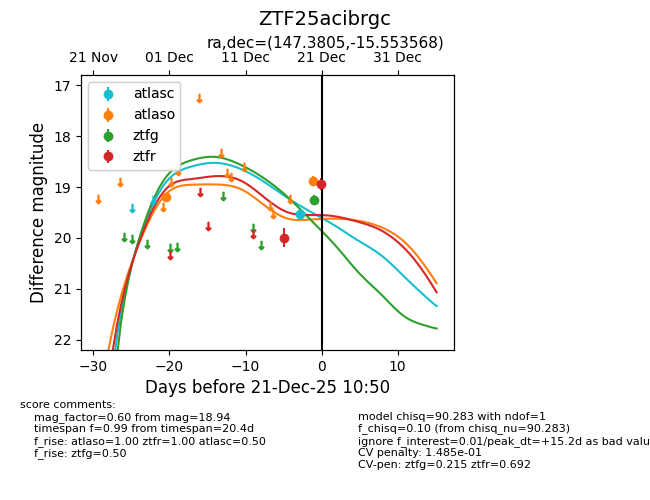
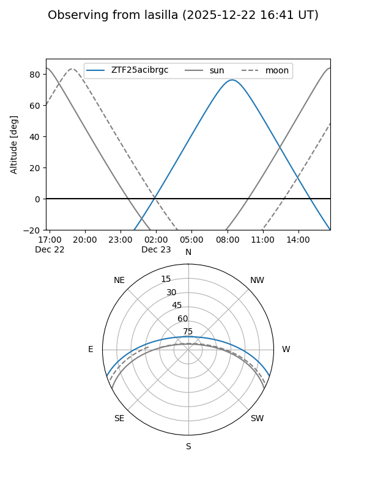
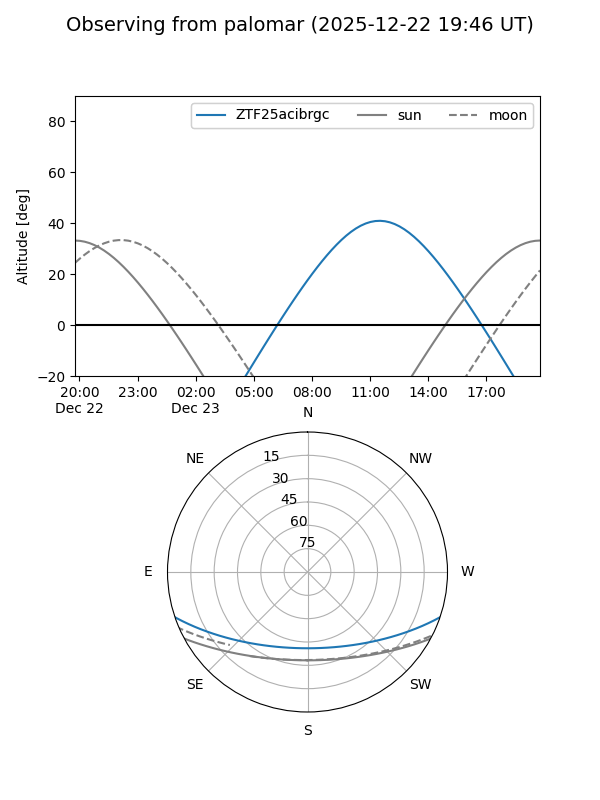
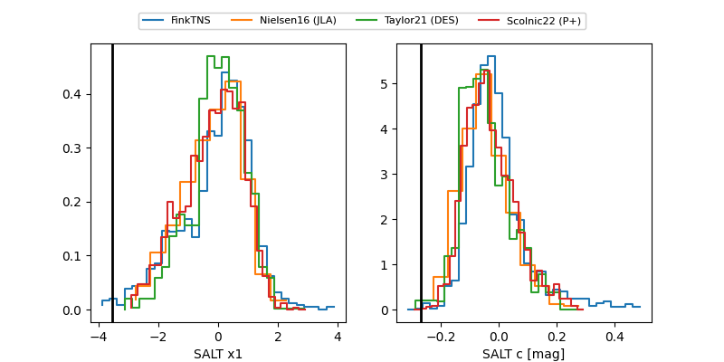

ZTF25acibrgc
Target ZTF25acibrgc at 2025-12-20 13:34
Aliases and brokers:
FINK: fink-portal.org/ZTF25acibrgc
Lasair: lasair-ztf.lsst.ac.uk/objects/ZTF25acibrgc
ALeRCE: alerce.online/object/ZTF25acibrgc
alt names
ZTF25acibrgc (ztf,fink_ztf)
Coordinates:
equatorial (ra, dec) = 147.3805,-15.55357
equatorial (HMS+DMS) = 09:49:31.32,-15:33:12.84
galactic (l, b) = (251.4464,+28.61455)
Flags:
Photometry:
last ztfg=19.25, ztfr=19.99
1 ztfg, 1 ztfr detections
Lightcurve

Visibility


Additional plots
